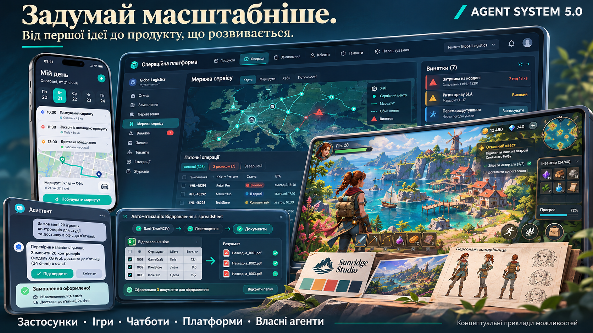
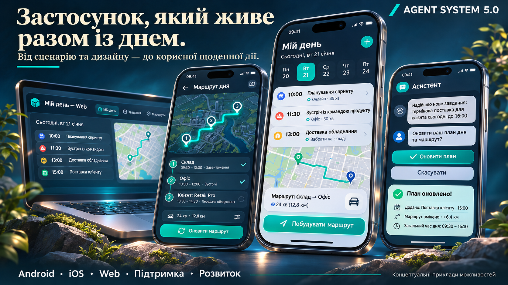
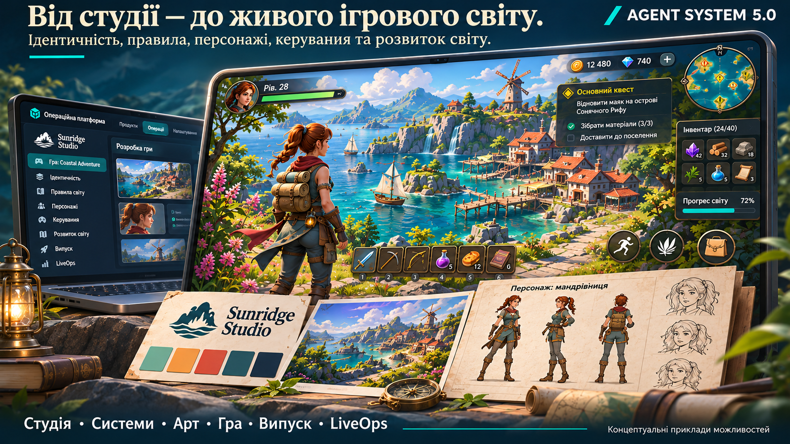
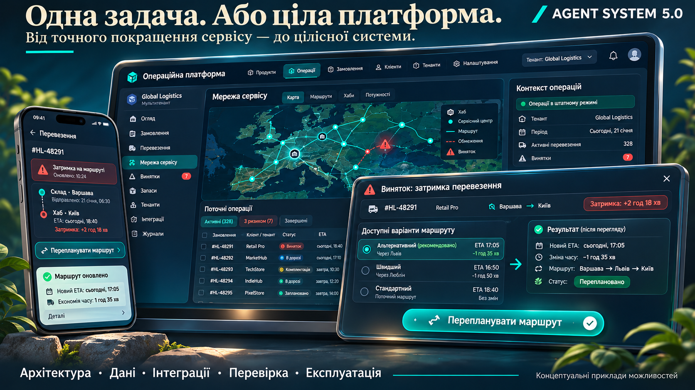
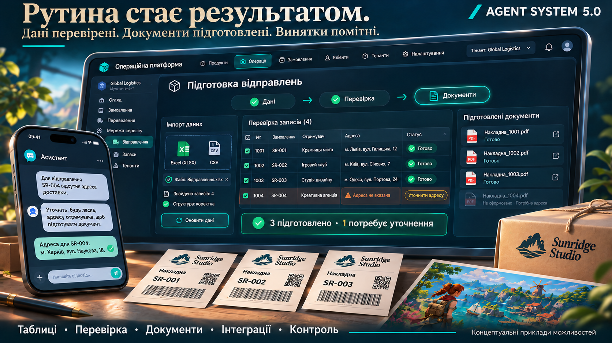
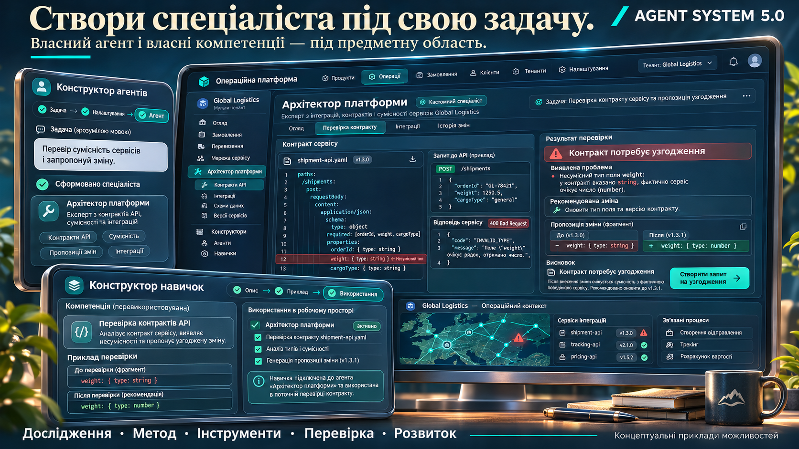
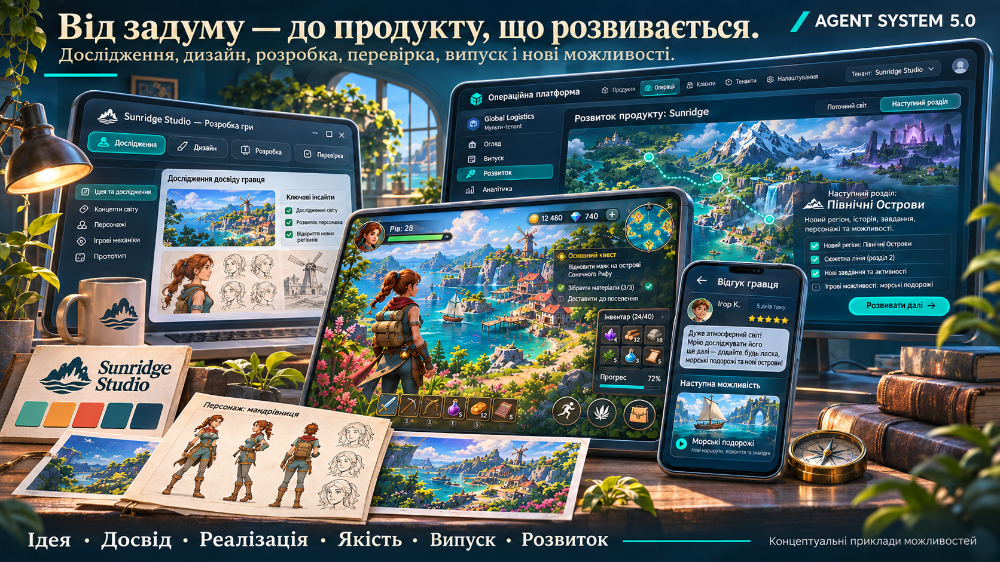
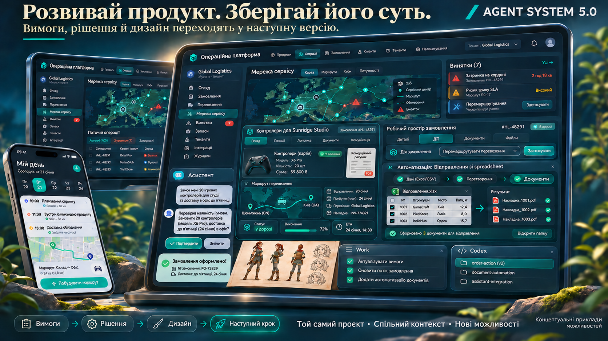
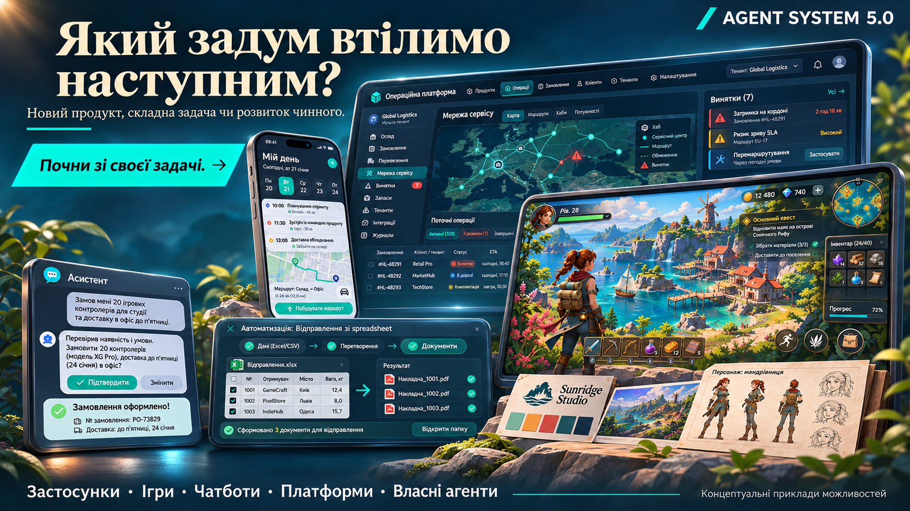

Що можна створити з Codex?
Почніть із конкретної задачі або продовжте наявний продукт. Ілюстрації показують вхідні дані, рішення й результати, з якими можна працювати за допомогою набору навичок.
- Відкрити посібник
- Пошук із перевірними джерелами (RAG)
- Оцінювання робочого процесу
- PDF із технічними схемами
- Головна сторінка репозиторію
- Офлайн-галерея
- Єдиний робочий простір
- Мій день
- Sunridge Studio
- Асистент
- Global Logistics
- З таблиці до документів
- Спеціаліст для повторюваної задачі
- Пошук із перевірними джерелами
- Оцінювання робочого процесу
- Панель Agent Atelier
- Життєвий цикл продукту
- Той самий проєкт триває
- Ваше наступне завдання
Ці концепції показують кілька можливих застосувань системи. Написи на оригінальних ілюстраціях збережено. Актуальні версії продукту вказані на головній сторінці репозиторію.
Щоб завантажити офлайн-галерею, увійдіть до GitHub і відкрийте успішний запуск перевірки для main. У розділі Artifacts завантажте product-showcase, розпакуйте Showcase.zip і відкрийте index.html.
Єдиний робочий простір
Оригінальна концепція продукту · ілюстрація українською


Додаткова обкладинка

Мій день
Оригінальна концепція продукту · ілюстрація українською


Технічна схема

Sunridge Studio
Оригінальна концепція продукту · ілюстрація українською


Технічна схема

Асистент
Оригінальна концепція продукту · ілюстрація українською

Технічна схема

Global Logistics
Оригінальна концепція продукту · ілюстрація українською


Технічна схема

З таблиці до документів
Оригінальна концепція продукту · ілюстрація українською


Технічна схема

Спеціаліст для повторюваної задачі
Оригінальна концепція продукту · ілюстрація українською


Технічна схема

Пошук із перевірними джерелами

Оцінювання робочого процесу

Панель Agent Atelier

Більше концепцій
Життєвий цикл продукту
Оригінальна концепція продукту · ілюстрація українською


Той самий проєкт триває
Оригінальна концепція продукту · ілюстрація українською


Ваше наступне завдання
Оригінальна концепція продукту · ілюстрація українською

